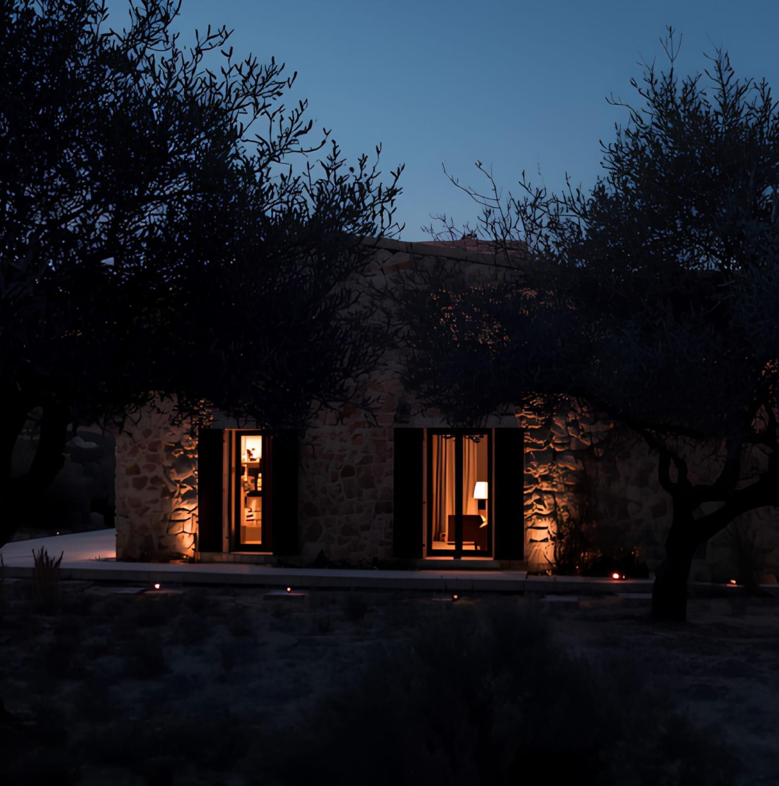
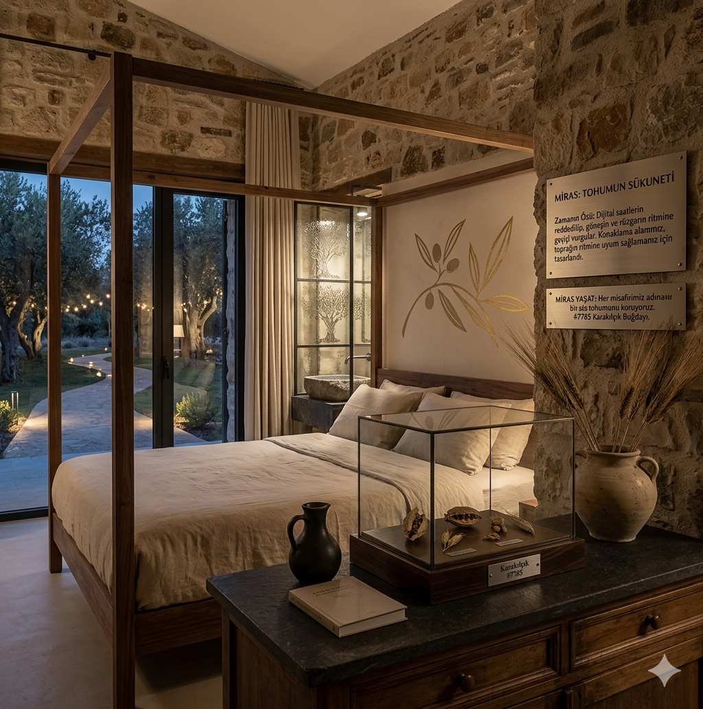

ÖZ'E DÖNÜŞ
NÜVE, misafirlerini sadece bir sofraya değil, bir yaşam biçimine davet eder. Konaklama alanımız, asırlık zeytin ağaçlarının gölgesinde, toprağın ve yıldızların ritmine uyum sağlamanız için tasarlandı. Burada zaman, dijital saatlerin değil; rüzgarın, yaprakların ve güneşin hareketine göre akar.


TAŞIN VE ZAMANIN HAFIZASI
Misafirhanelerimiz, Seferihisar'ın geleneksel taş işçiliği ve Ege mimarisinin zarif bir yansımasıdır. Bölgedeki eski yapılardan özenle kurtarılan doğal taşlar ve ömrünü tamamlamış zeytin ağaçları, ileri dönüşüm prensibiyle modern bir yavaş yaşam alanına dönüştürüldü. Nefes alan taş duvarlar mekânın doğal iklimlendirmesini sağlarken, boydan boya uzanan cam paneller sizi doğrudan zeytinliklerin kalbine bağlar.
Ege'nin geleneksel kalın taş duvar mimarisi sayesinde, enerjiden tasarruf eden; yazın serin, kışın ise sıcak bir atmosfer sağlandı.
Odalarımızda kullanılan tüm tekstil ve kozmetik ürünleri yereldir.